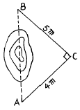
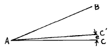
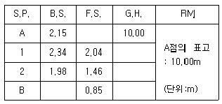
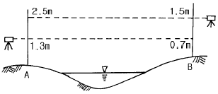
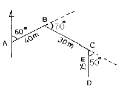
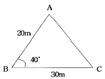
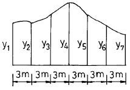

측량기능사 (2003-07-20 기출문제)
1과목: 임의 구분
1. 여러 개의 방향각 사이의 각을 차례로 방향각법으로 관측하여 최소 제곱법에 의하여 각각의 최확값을 구하는 수평 각 관측법은?
- 단각법
- 조합각 관측법
- 배각법
- 복각 관측법
(정답률: 66%)

2. 다음 중 동일 측점수에 비하여 도달거리가 가장 길기 때문에 노선 측량, 하천 측량, 터널 측량 등과 같이 폭이 좁고 거리가 먼 지역에 적합한 삼각망은?
- 복심 삼각망
- 유심 삼각망
- 사변형 삼각망
- 단열 삼각망
(정답률: 77%)
3. 동일한 각을 측정회수가 다르게 측정하여 다음의 값을 얻었다. 최확치를 구한 값은? (단, 47° 37' 38" (1회 측정치), 47° 37' 21" (4회 측정 평균치), 47° 37' 30" (9회 측정 평균치))
- 47° 37' 30"
- 47° 37' 36"
- 47° 37' 28"
- 47° 37' 32"
(정답률: 60%)
4. VLBI로 어느 거리를 세 구간으로 나누어 관측한 결과 구간별 확률오차가 각각 ± 0.001m, ± 0.004m, ± 0.007m 라면 전 거리에 대한 오차는 얼마인가?
- ± 0.001m
- ± 0.003m
- ± 0.008m
- ± 0.015m
(정답률: 40%)
5. 그림과 같이 거리와 각을 측정하여 AB의 간접거리를 재려고 한다. AB 두 점간의 거리는? (단, AC = 4m, BC = 5m이다.)

- 3m
- 4m
- 6.4m
- 7.2m
(정답률: 81%)
6. 종단측량에서 부근에 표고를 알고 있는 수준점이 없을 때에는 왕복측량을 해야 한다. 이러한 경우에는 측량구간에 임시 수준점을 두는 것이 좋은데 임시 수준점 사이의 간격은 얼마가 적당한가?
- 200m
- 300m
- 500m
- 700m
(정답률: 42%)
7. 배횡거에 조정위거를 곱하여 구한 배면적이 -11610.459m2일 때 면적을 구하면?
- 1451.308m2
- 2902.615m2
- 4353.923m2
- 58⑤.230m2
(정답률: 38%)
8. 평판을 측점에 세우는데 필요한 3조건이 아닌 것은?
- 구심
- 표정
- 이심
- 정준
(정답률: 76%)
9. 직접수준측량에서 2km 왕복 오차가 10mm라 하면 8km왕복 했을 때의 오차는 얼마인가?
- 10mm
- 20mm
- 30mm
- 40mm
(정답률: 43%)
10. 기선 삼각망을 설치할 때에 주의 사항으로 틀린 것은?
- 평탄한 곳이 없을 때 기선의 설정위치는 경사 1/10 이하의 지형에 설치
- 1회의 기선 확대는 기선 길이의 3배 이내
- 큰 삼각망에서 기선을 여러번 확대할 때는 기선길이의 10배 이내
- 삼각망이 길게 될 때에는 기선 길이의 20배 정도의 간격으로 검기선 설치
(정답률: 44%)
11. 평판측량의 전방 교회법에서 방향선의 교각은 어느 정도가 가장 적당한가?
- 20° ∼ 30°
- 60° ∼ 180°
- 20° ∼ 90°
- 30° ∼ 150°
(정답률: 53%)
12. 축척 1/1200 인 평판 세부측량에서 제도의 허용오차를 0.2㎜로 할 때 평판 구심오차의 허용한계는?
- 12㎝
- 24㎝
- 30㎝
- 40㎝
(정답률: 20%)
13. 전진법에 의한 평판 측량에서 변수가 25변에 대한 폐합오차의 한계는 얼마인가?
- ± 1.2mm
- ± 1.5mm
- ± 2.0mm
- ± 2.5mm
(정답률: 38%)
14. 트랜싯의 연직축이 기울어져 관측할때 생기는 오차 제거에 관한 사항 중 옳은 것은?
- 양유표의 평균을 취한다.
- 반복법으로 관측한다.
- 정반관측치의 평균을 취한다.
- 어떠한 관측법으로도 제거할 수 없다.
(정답률: 38%)
15. 그림에서 ∠BAC = 30° , ∠BAC′ = 29° 59′ 42″ , AC 의 길이를 150 m로 할 때 생기는 오차는 몇 cm인가?

- 0.3 ㎝
- 1.3 ㎝
- 3 ㎝
- 13 ㎝
(정답률: 52%)
16. 수준측량에서 고저오차는 거리와 어떤 관계인가?
- 거리에 비례
- 거리에 반비례
- 거리의 제곱근에 반비례
- 거리의 제곱근에 비례
(정답률: 30%)
17. 다음 야장에서 B 점의 표고는 얼마인가?

- 12.12 m
- 14.35 m
- 16.46 m
- 20.62 m
(정답률: 45%)
18. 평판측량의 장점은?
- 측량방법이 간단하다.
- 도면 축척의 변경이 용이하다.
- 휴대하기 편하다.
- 신축으로 인한 오차가 없다.
(정답률: 46%)
19. 노선측량의 답사 등에 이용되며 정밀도가 가장 낮은 트래버스는?
- 개방 트래버스
- 폐합 트래버스
- 결합 트래버스
- 트래버스망
(정답률: 79%)
20. 측량 중에 기온의 변화, 직사 광선에 의한 기계의 수축 및 팽창, 바람에 의한 진동, 삼각의 침하 등에 의해 생기는 오차는?
- 시준 오차
- 자연 오차
- 착오
- 우연 오차
(정답률: 33%)
2과목: 임의 구분
21. 삼각점 선정시 고려할 사항 중 잘못 설명된 것은?
- 가능한한 측점수는 많게 한다.
- 상호간 시준이 잘되는 곳으로 한다.
- 내각의 크기는 30° ∼ 120° 으로 한다.
- 지반이 견고하고 침하되지 않는 곳으로 한다.
(정답률: 75%)
22. 측량 구역을 몇 개의 삼각형으로 구분하고 각 삼각형의 세 변을 측정하여 면적을 구하는 방법은?
- 삼사법
- 이변법
- 삼변법
- 좌표법
(정답률: 82%)
23. 방위각 235° 10′의 방위는 어느 것인가?
- S 55° 10′W
- E 55° 10′S
- S 55° 10′E
- W 55° 10′S
(정답률: 75%)
24. 6각형 폐합트래버어스의 내각의 총합은?
- 720°
- 540°
- 1080°
- 1440°
(정답률: 53%)
25. 다음은 방위각 계산을 설명한 것이다. 이중 옳지 않은 것은?
- 방위각과 역방위각의 차는 180° 이다.
- 방위각이 360° 를 넘으면 360° 를 감한다.
- 방위각이 (-)각이 나오면 360° 를 더한다.
- 어떤 측선의 방위각은 전측선의 방위각 ± 그 측선의 교각이다.
(정답률: 43%)
26. 다음 그림의 하천 교호수준측량의 결과를 가지고 A, B 두 지점의 지반고 차를 구하면?

- 0.8 m
- 1.0 m
- 1.6 m
- 2.2 m
(정답률: 43%)
27. 삼각측량의 목적은 결과적으로 무엇을 구하고자 하는 것인가?
- 점의 위치를 결정
- 변의 길이를 산출
- 삼각형의 면적을 결정
- 기타 측량의 기준 높이를 결정
(정답률: 48%)
28. 수준측량에서 왕복측량의 허용오차가 편도거리 2km에 대하여 20㎜일 때 1km에 대한 허용오차는?
- 20 ㎜
- 14 ㎜
- 10 ㎜
- 7 ㎜
(정답률: 16%)
29. 평판측량의 후방교회법에서 시오삼각형이 생기는 가장 중요한 원인은?
- 교회각이 너무 적을 때
- 평판의 표정이 불안전할 때
- 도지에 신축이 있었을 때
- 평판의 구심이 불안전할 때
(정답률: 50%)
30. 정도 1/1,000,000의 측량에서 대지측량과 평면측량의 한계는? (단, R=6370km)
- 반지름 11km 범위
- 반지름 15km 범위
- 반지름 17km 범위
- 반지름 20km 범위
(정답률: 66%)
31. 평판으로 트래버스 측량을 하여 허용오차내로 폐합오차가 생겼다면 오차처리는 어떻게 해야 하는가?
- 각의 크기에 비례하여 조정
- 각의 수로 나누어 조정
- 변의 길이에 비례하여 조정
- 변의 수로 나누어 조정
(정답률: 38%)
32. 다음 트래버스 측량에서 D점의 경거는 얼마인가?

- 58.826m
- 58.743m
- 57.622m
- 67.436m
(정답률: 28%)
33. 다음 트래버스 측량에서 P점의 좌표가 xp = -2,000m, yp = +1,000m이고 PQ의 거리는 1.5km, PQ의 방위각이 60° 일 때 Q점의 좌표는?
- xQ = -1,350m , yQ = +2,399m
- xQ= -1,250m , yQ = +2,299m
- xQ = -1,450m , yQ = +2,099m
- xQ = -1,150m , yQ = +2,299m
(정답률: 52%)
34. 다음 사변형 삼각망의 조정에 필요한 조건식의 총수는?
- 6
- 5
- 4
- 3
(정답률: 63%)
35. 거리 측정기에서 위성에서 송신되는 신호를 받아 3차원 위치를 결정 할 수 있고 두 점 간의 시통이 되지 않는 지형에서도 관측이 가능하며 기후의 영향도 거의 받지 않는 것은 어느 것인가?
- 초장 기선 간섭계(VLBI)
- GPS
- 위성거리 측량(SLR)
- 전파 거리 측정기
(정답률: 85%)
36. 등고선의 성질중 옳은 것은?
- 등고선은 지표의 최대 경사선의 방향과 직교하지 않는다.
- 같은 등고선 위의 모든 점은 높이가 서로 다르다.
- 지표의 경사가 급할수록 등고선 간격이 넓어진다.
- 높이가 다른 두 등고선은 동굴이나 절벽의 지형이 아닌 곳에서는 교차하지 않는다.
(정답률: 65%)
37. 곡선을 설치하는 방법중에서 정밀도가 높아 가장 많이 사용하는 것은?
- 중앙 종거법
- 지거 종거법
- 접선법
- 편각법
(정답률: 59%)
38. 편각에 의한 단곡선을 설치할 때 다음의 계산 결과를 얻었다. E.C 의 누가 거리는? (단, I.P = 257.373m, T .L = 58.927m, C.L = 125.373m)
- 307.302 m
- 313.278 m
- 323.819 m
- 332.923 m
(정답률: 43%)
39. 스타디아측량의 관측오차중 관측결과에 가장 큰 영향을 미치는 것은?
- 표척의 경사에 의한 오차
- 스타디아 정수가 정확하지 않으므로 인한 오차
- 표척읽기에 의한 오차
- 표척의 눈금이 일정하지 않으므로 인한 오차
(정답률: 44%)
40. A점의 표고가 34.6m, B점의 표고가 69.0m이며 AB간의 수평거리가 120m일 때 표고 50m인 등고선은 A점으로부터 수평거리로 얼마 떨어진 곳을 통과 하는가?
- 18.8m
- 53.7m
- 66.3m
- 88.6m
(정답률: 44%)
3과목: 임의 구분
41. 30m 마다 6mm 늘어져 있는 줄자로 정사각형의 땅을 재었더니 62,500m2 이였다면 실제면적은?
- 62,625m2
- 62,615m2
- 62,525m2
- 62,475m2
(정답률: 40%)
42. 다음중 지형측량의 작업순서가 올바르게 된 것은?
- 답사 → 세부측량 → 골조측량 → 지형도제작
- 세부측량 → 골조측량 → 답사 → 지형도제작
- 답사 → 골조측량 → 세부측량 → 지형도제작
- 골조측량 → 답사 → 세부측량 → 지형도제작
(정답률: 84%)
43. 렌즈의 중심에서 사진면에 내린 수선의 발을 무엇이라 하는가?
- 부점
- 주점
- 연직점
- 등각점
(정답률: 37%)
44. 그림과 같은 삼각형의 면적은?

- 115m2
- 193m2
- 230m2
- 386m2
(정답률: 56%)
45. 아래 그림과 같이 지거간격 3m 등간격으로 각 지거(y1~y7)를 측정하였다. 사다리꼴 공식에 의한 면적은? (단, y1=1.5m, y2=1.2m, y3=2.5m, y4=3.5m, y5=3.0m, y6=2.8m, y7=2.5m)

- 43m2
- 44m2
- 45m2
- 46m2
(정답률: 48%)
46. 스타디아 측량을 할 때 시준고를 기계고와 같게 하는 가장 큰 이유는?
- 계산을 간단히 하기 위하여
- 오차를 적게 하기 위하여
- 시준을 편리하게 하기 위하여
- 기계의 안전을 위하여
(정답률: 43%)
47. 트래버스측량을 실시할 측점을 선점할 때 유의해야 할 사항으로 적당하지 않은 것은?
- 기계를 세우거나 시준하기에 좋고 지반이 견고한 장소이어야 한다.
- 후속되는 측량, 특히 세부 측량에 편리하여야 한다.
- 측선의 거리는 가능한 한 비슷하게 하고, 고저차가 크지 않게 한다.
- 측점은 안전하게 보존되어야 하므로 찾기 어렵고 잘 안보이는 곳에 정해야 한다
(정답률: 78%)
48. 노선 선정의 지형상 접선장의 길이가 18m이고, 교각이 21°30′ 일 때의 적당한 반지름 R은?
- 94.80m
- 91.40m
- 72.63m
- 63.83m
(정답률: 25%)
49. 낙엽수와 칩엽수, 토양의 습윤도 등의 판독에 쓰이는 요소는 어느 것인가?
- 색조
- 질감
- 음영
- 모양
(정답률: 35%)
50. 다음은 대축척 도화에 가장 좋은 항공사진은? (단, 초점거리(f) : 15㎝)
- 촬영고도 800m의 항공사진
- 촬영고도 1500m의 항공사진
- 촬영고도 2000m의 항공사진
- 촬영고도 2500m의 항공사진
(정답률: 27%)
51. 다음 중 기본측량과 공공측량에서 회전타원체면상의 값으로 표시하는 것은?
- 거리와 면적
- 위치
- 측량의 원점
- 지구의 형상과 크기
(정답률: 23%)
52. 국립지리원장이 발행하는 지도의 축척으로 틀린 것은?
- 5,000분의 1
- 1만분의 1
- 2만 5,000분의 1
- 3만분의 1
(정답률: 38%)
53. 기본측량이나 공공측량의 실시 공고를 하는 자는?
- 건설교통부장관
- 국립지리원장
- 도지사
- 측량작업기관
(정답률: 26%)
54. 측량업의 등록을 하고자 하는자가 신청서를 제출하고자 할 때 첨부 서류가 아닌 것은?
- 기술능력을 갖춘 사실을 증명하는 서류
- 법인인 경우에는 등기부등본
- 장비를 갖춘 사실을 증명하는 서류
- 주된 영업소 또는 지점의 소재지를 증명하는 서류
(정답률: 40%)
55. 측량용역 대가의 기준에 대한 설명으로 잘못된 것은?
- 측량용역 대가의 기준은 건설교통부장관이 정한다.
- 측량용역 대가는 직접측량비 및 간접측량비로 구분 한다.
- 측량용역 대가의 기준을 정할 때는 이를 관보에 고시해야 한다.
- 측량용역 대가는 측량협회에서 심사한다.
(정답률: 33%)
56. 다음 중 중앙지명위원회의 위원을 추천할 수 없는 자는?
- 국사편찬위원회 위원장
- 과학기술부장관
- 행정자치부장관
- 문화관광부장관
(정답률: 32%)
57. 무단으로 측량성과 또는 측량기록을 복제한 자에 대한 벌칙으로 옳은 것은?
- 50만원 이하의 과태료
- 30만원 이하의 벌금
- 1년 이하의 징역 또는 300만원 이하의 벌금
- 2년 이하의 징역 또는 500만원 이하의 벌금
(정답률: 49%)
58. 측량성과를 얻을때까지의 측량에 관한 작업의 기록을 무엇이라고 하는가?
- 작업일지
- 측량기록
- 야장
- 측량계산
(정답률: 61%)
59. 측량법에서 정한 측량업의 종류가 아닌 것은?
- 대규모측량업
- 연안조사측량업
- 일반측량업
- 지도제작업
(정답률: 17%)
60. 지도 등의 판매가격을 정한 때에는 이를 고시하여야한다고시 사항에 포함되어야 할 내용 중 옳지 않은 것은?
- 명칭
- 축척 및 규격
- 판매가격
- 측량의 종류
(정답률: 38%)